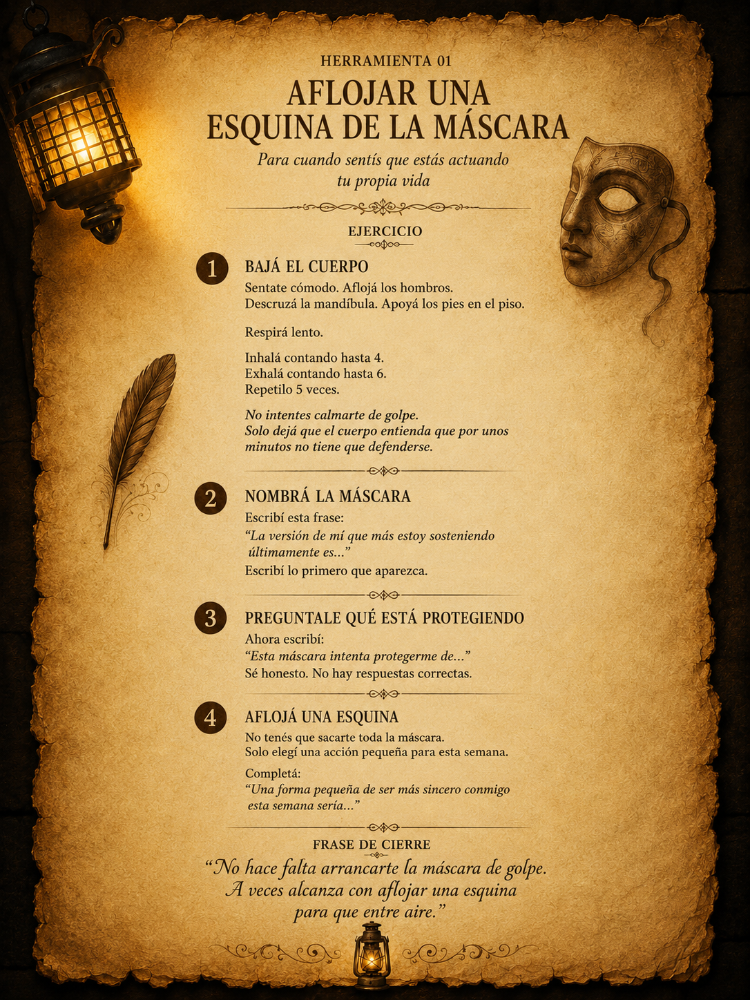
Ver pergamino completo
01
La máscara de cartón
Para cuando estás cansado de sostener una versión de vos que ya pesa demasiado.
lectura inmersiva · calma · herramientas
Para cuando el ruido pesa demasiado.
Una muestra para bajar un cambio, leer sin apuro y descubrir una experiencia creada para volver a escucharte.
Entrar a la muestramuestra gratis
Leé una parte y fijate si te identificas..sentí si esta experiencia habla con ese lugar tuyo que muchas veces no encuentra palabras. La versión completa suma lectura inmersiva, audio ambiente, cuentos reflexivos y herramientas prácticas para esos momentos en los que no sabes como seguir.
lectura interactiva
Usá los botones para recorrer la muestra, parte de la experiencia digital completa. Un espacio privado en crecimiento, creado para quienes buscan leer, pausar y volver a escucharse.
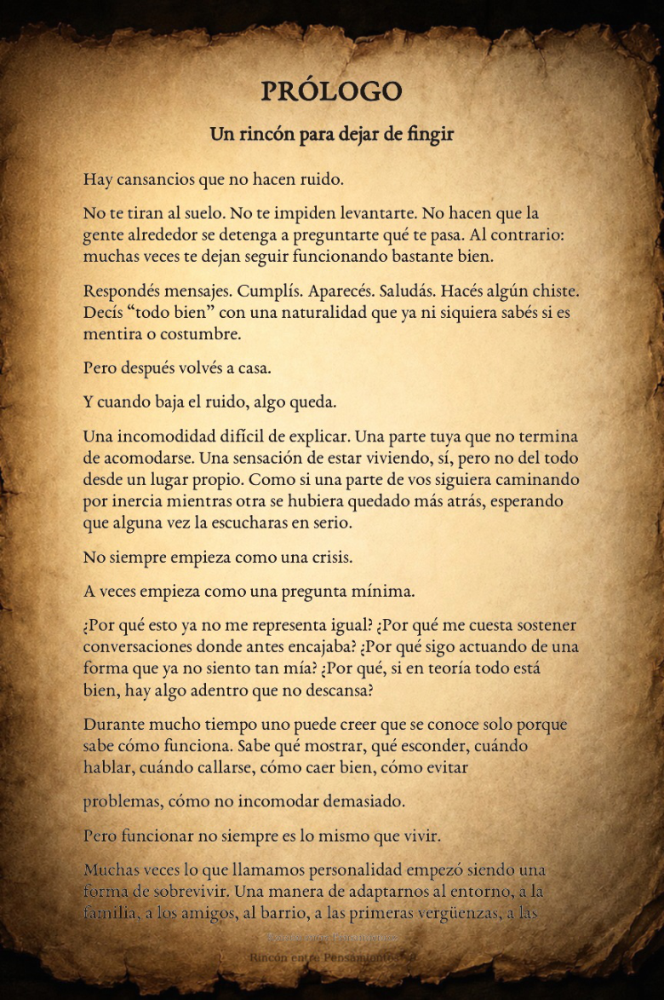
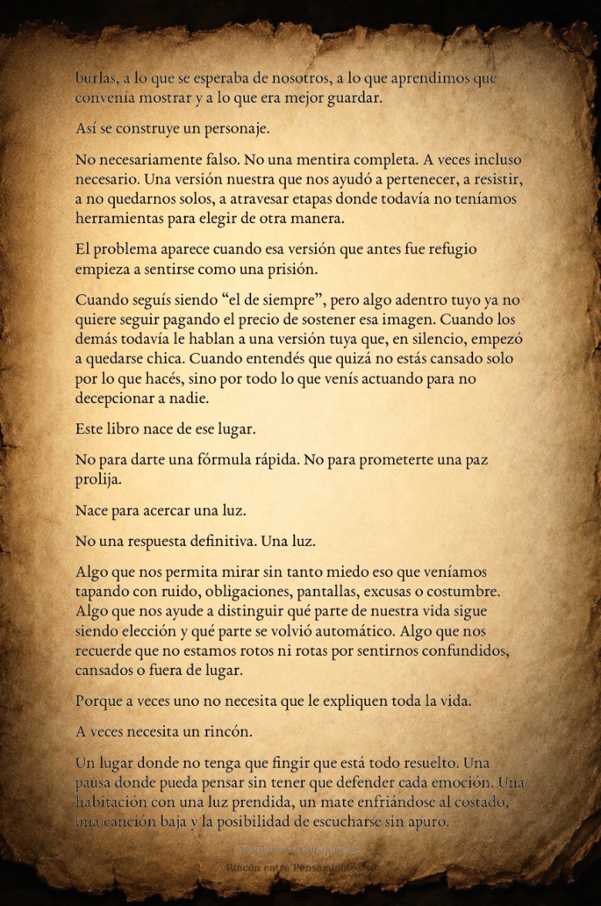
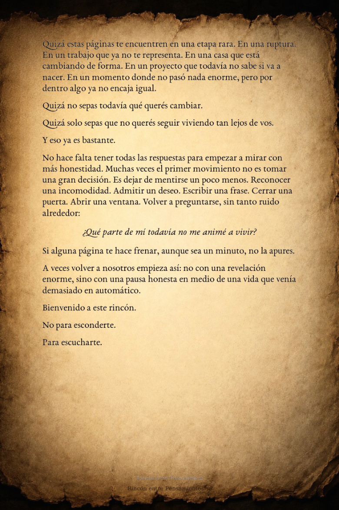
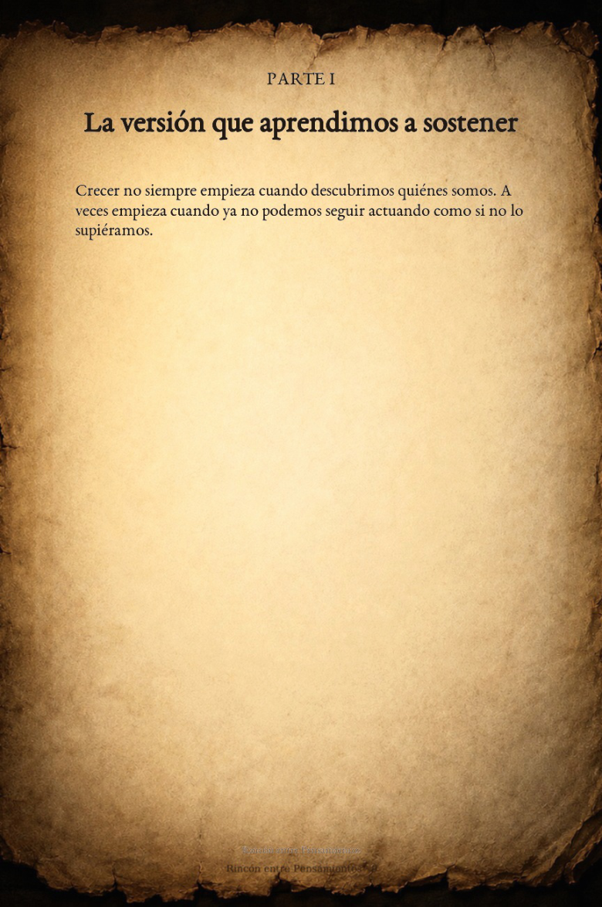
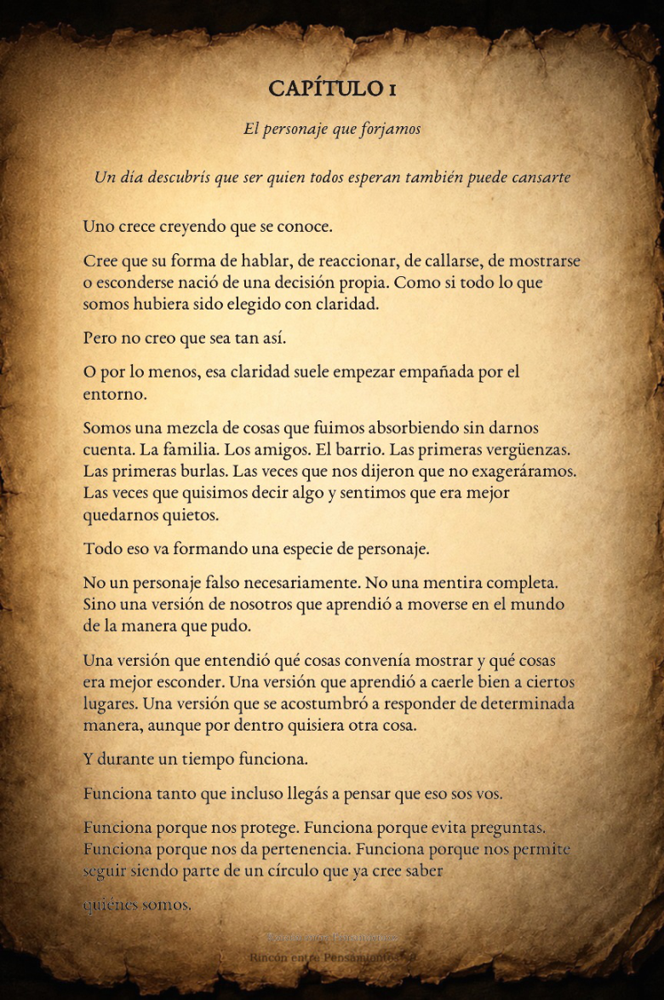
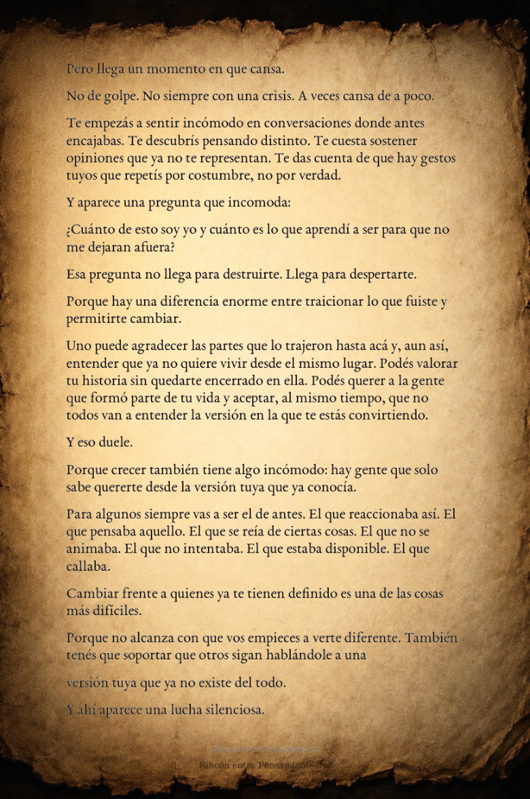
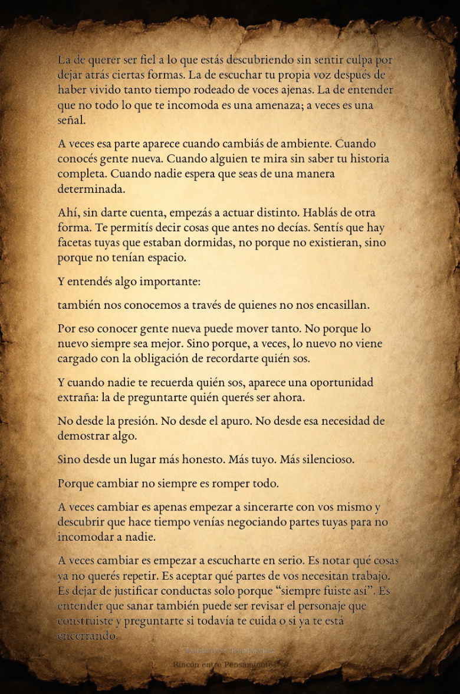
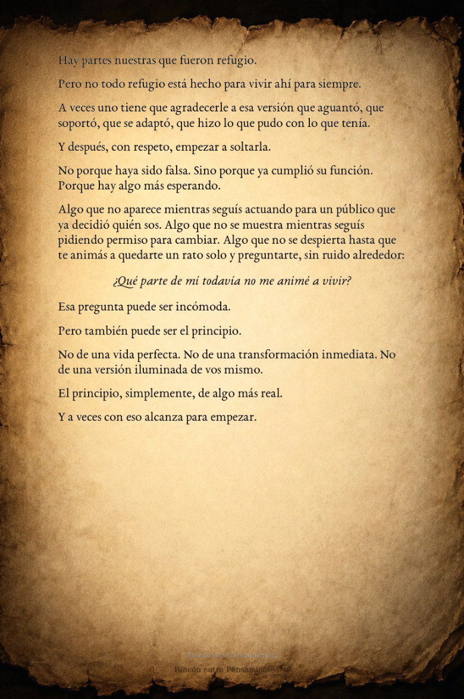
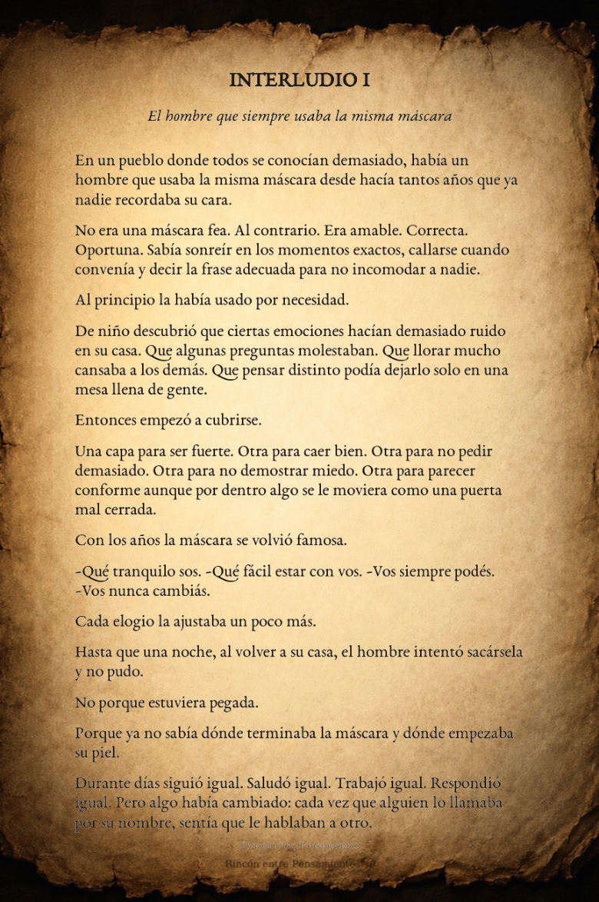
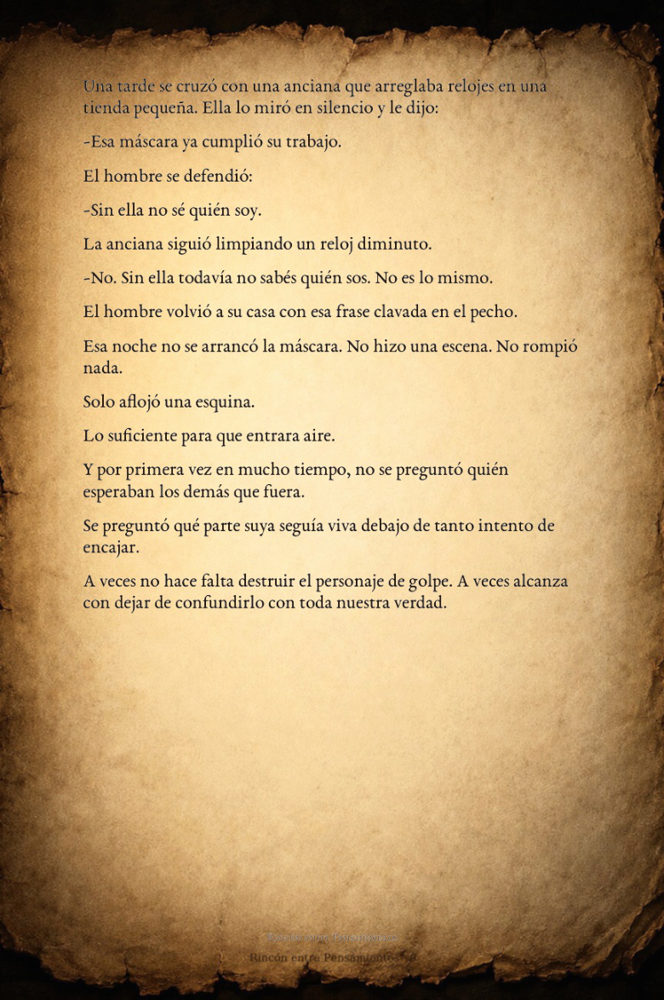
Página 1 de 10
también incluye herramientas
La experiencia completa de Rincón entre Pensamientos no se queda solo en leer. También incluye herramientas simples para esos momentos en los que necesitás ordenar lo que sentís, bajar el ruido o dar un primer paso sin exigirte de más.

Ver pergamino completoPara cuando estás cansado de sostener una versión de vos que ya pesa demasiado.
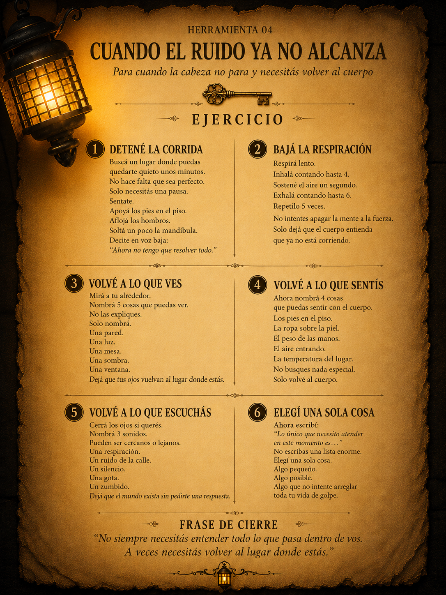
Ver pergamino completoPara esos días en los que la cabeza no se apaga y todo parece demasiado.
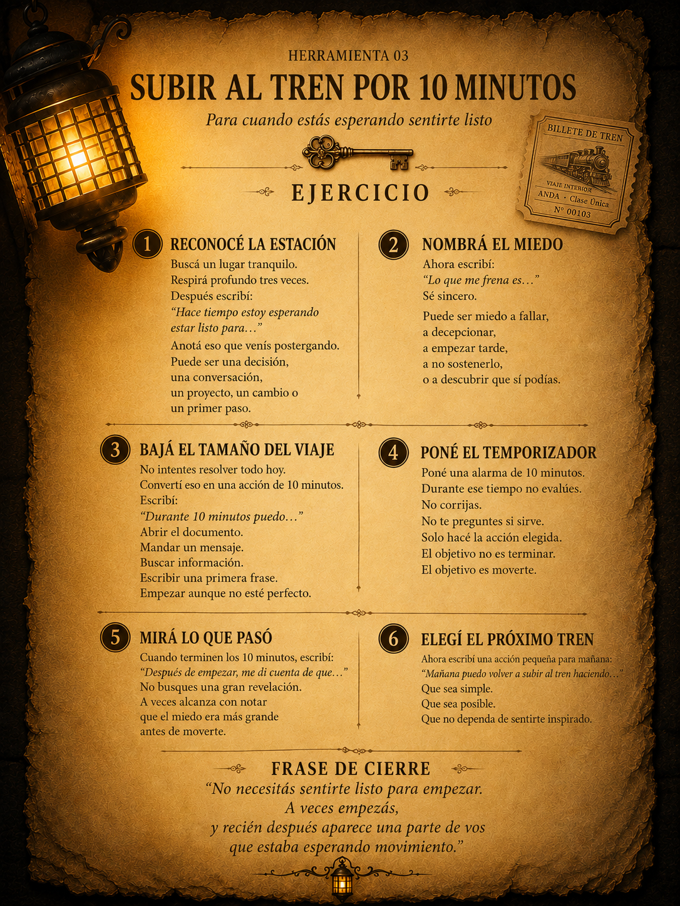
Ver pergamino completoPara cuando venís postergando algo importante y no sabés cómo empezar.
Estas son solo algunas puertas de entrada. En la versión completa encontrás más lecturas, interludios y herramientas para acompañar distintos momentos: cansancio emocional, ruido mental, cierres pendientes, soledad, pausa y nuevos comienzos.
cuento incluido
Además de herramientas, la versión completa incluye cuentos e interludios pensados para acompañar esos momentos donde no siempre hay respuestas claras, pero sí una necesidad de volver a mirar hacia adentro.
Muestra breve
Durante mucho tiempo, creyó que cerrar la puerta era una forma de protegerse. No de los demás, sino de todo aquello que no sabía explicar sin romperse un poco.
La habitación no era grande. Tenía una silla, una mesa antigua y una ventana que apenas dejaba entrar la luz. Pero ahí, entre el polvo y el silencio, guardaba pensamientos que nunca se habían animado a salir.
Una noche, cansado de sostener el ruido afuera, se sentó frente a la mesa y dejó de escapar. No encontró una respuesta. Encontró algo más simple: un lugar donde poder escucharse sin tener que fingir.
A veces, sanar no empieza cuando alguien abre la puerta desde afuera. A veces empieza cuando uno deja de tener miedo de entrar a la habitación que venía evitando.
Y esa noche, por primera vez en mucho tiempo, no salió corriendo de sí mismo.
En la versión completa encontrás más cuentos, interludios y pausas para leer cuando necesitás bajar el ruido y volver a vos.
versión completa
Si esta muestra te dejó una pregunta dando vueltas, la versión completa te invita a seguir entrando: lectura en PDF, experiencia inmersiva, audio ambiente, cuentos reflexivos y herramientas para acompañar lo que muchas veces no se sabe cómo explicar.